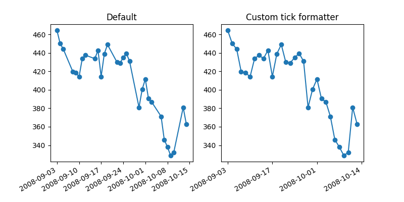

Version 2.2.5
Note
Click here to download the full example code
When plotting time series, e.g., financial time series, one often wants to leave out days on which there is no data, i.e. weekends. The example below shows how to use an 'index formatter' to achieve the desired plot
from __future__ import print_function
import numpy as np
import matplotlib.pyplot as plt
import matplotlib.cbook as cbook
import matplotlib.ticker as ticker
# Load a numpy record array from yahoo csv data with fields date, open, close,
# volume, adj_close from the mpl-data/example directory. The record array
# stores the date as an np.datetime64 with a day unit ('D') in the date column.
with cbook.get_sample_data('goog.npz') as datafile:
r = np.load(datafile)['price_data'].view(np.recarray)
r = r[-30:] # get the last 30 days
# Matplotlib works better with datetime.datetime than np.datetime64, but the
# latter is more portable.
date = r.date.astype('O')
# first we'll do it the default way, with gaps on weekends
fig, axes = plt.subplots(ncols=2, figsize=(8, 4))
ax = axes[0]
ax.plot(date, r.adj_close, 'o-')
ax.set_title("Default")
fig.autofmt_xdate()
# next we'll write a custom formatter
N = len(r)
ind = np.arange(N) # the evenly spaced plot indices
def format_date(x, pos=None):
thisind = np.clip(int(x + 0.5), 0, N - 1)
return date[thisind].strftime('%Y-%m-%d')
ax = axes[1]
ax.plot(ind, r.adj_close, 'o-')
ax.xaxis.set_major_formatter(ticker.FuncFormatter(format_date))
ax.set_title("Custom tick formatter")
fig.autofmt_xdate()
plt.show()
Keywords: matplotlib code example, codex, python plot, pyplot Gallery generated by Sphinx-Gallery